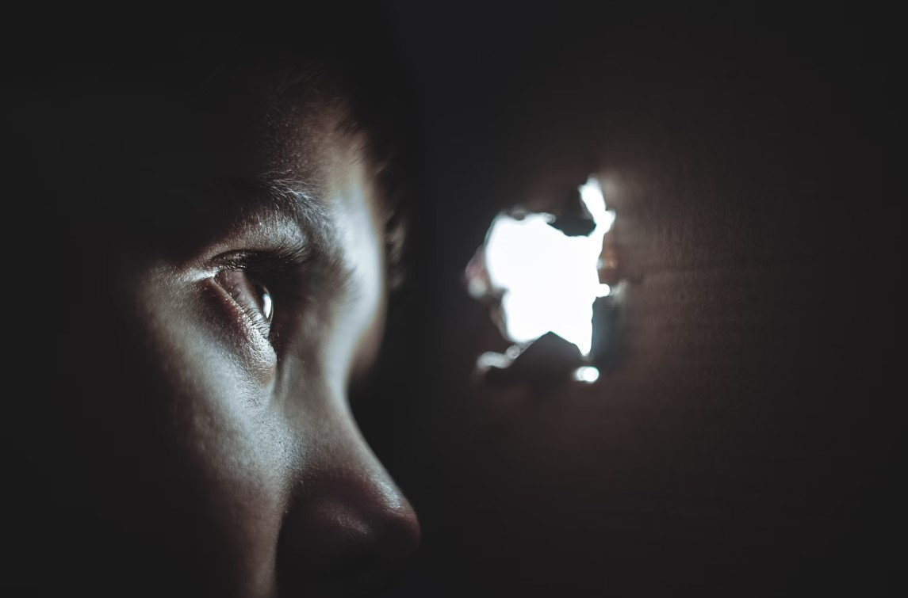

Safety is a complex, multi-layered concept that extends beyond physical stability and protection to encompass inner peace and a sense of belonging. In Gaza, rubble is scattered across the city, serving as a stark symbol of war, destruction, and insecurity. Yet, even amidst these ruins, people lean on one another, searching for safety. This makes me wonder: In a place where physical security is almost nonexistent, can love itself be a form of safety? And if love is the source of safety, does that mean true safety is ultimately rooted in truth rather than mere physical protection?
From an architectural perspective, safety is typically associated with strong buildings, shelters, and spaces that can withstand external threats. However, in times of war and conflict, physical security can be obliterated in an instant. So, when homes are reduced to rubble, what keeps people going? The strength to endure hardship comes not only from the stability of structures but also from human connections—family bonds, community support, and the refuge found in faith. Safety is not just about walls; it is about the existence of truth. Logic tells us that safety comes from protective measures, military strength, and shelters. But truth tells us that safety can also come from love, from human relationships, and from a reality that transcends the visible world.
The rubble in Gaza is more than broken stones; it is fragments of memory—remnants of homes that once stood, of lives once lived, of love that refuses to fade. In a place so deeply marked by suffering, perhaps safety can emerge from a love and sense of belonging that surpass the material world. If love is truth, then truth itself is our safety. Even when everything around us crumbles, it remains, holding us together.
Buildings can be reconstructed after destruction, but if trust, unity, and love between people are lost, that is the true form of insecurity. Safety is not merely about physical space; it is about relationships. In a place where love binds us together, can we find rest for our souls? Even among the ruins, does truth still hold us?
Space is more than just a physical container; it is a flow of energy, a place where relationships unfold. Amidst the ruins, rebuilding space should not be solely about survival but about creating an environment that nurtures love, encourages goodness, and offers peace and joy.
If space is to carry truth, it must go beyond simply sheltering the body—it must also provide refuge for the soul.
The rubble of Gaza is not only a remnant of the past; it can also be the foundation of the future. If we rethink the meaning of space—not just how to rebuild homes, but how to create environments where people support and nourish one another—then the ruins themselves contribute to that vision. The destruction is no longer just an end but the beginning of love.
Space bears witness to relationships—the relationship between people and space, between people and each other, and between people and the world. Space holds our memories; space embraces us.
If truth is greater than logic, then space should not be designed purely based on functionality. It should reflect a higher purpose—a space that embodies love, resilience, and belonging.
Space as a Vessel of Memory – Rubble can be repurposed as new building materials. These reconstructed structures would serve not just as physical spaces but as spiritual sanctuaries, bearing witness to how people, even in suffering, continue to love and support one another.
Space as a Place for Love – A space where people can care for one another, live together, and not be isolated by walls built from fear and separation.
When we talk about Gaza, its architecture, and its spaces, we are ultimately talking about how people survive, how they continue to love in the face of suffering, and how they find true safety.
True safety is not just about strong walls; it is about whether we find belonging in our relationships. True space is not just about accommodating our bodies; it is about holding our souls.
Even among the ruins, can we still rely on one another? Can we still find our home in love? And if love is truth, then what truly holds us, what truly keeps us safe, is not the logic of this world—but truth itself.